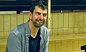
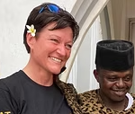
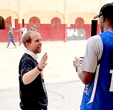

Marko ist der Stifter und Thüringer im Team. Als Gründer der JustOn GmbH steht er für Digitalisierung, für eine vielfältige Gesellschaft und für Innovation. Mit starkem unternehmerischen Geist setzt Marko Lösungen um.
Er ist der Initiator und Hauptakteur des Projekts Löwenpark, der zukünftigen Heimat des Erfurter Basketballs. Marko ist nicht nur ehemaliger Volleyballer, sondern hat als Leichtathlet, Judoka und Boxer immer Wert auf eine gesunde sportliche Tätigkeit gelegt.

Carine ist gebürtige Französin. Nach Aufenthalten und internationalen Projekten in England, Neuseeland und Spanien entschied sie sich vor 25 Jahren für ein Leben in Thüringen.
Sie versteht sich als Europäerin und trägt beruflich und privat gern die Stärken Thüringens in der Welt weiter. Carine arbeitet bei der LEG Thüringen und unterstützt die Thüringer Wirtschaft in ihrer Internationalisierung. Als ehemalige leistungssportliche Basketballerin schätzt sie die Werte des Sports.

Florian kommt ursprünglich aus Bamberg und lebt seit 2016 in Thüringen. Er arbeitet seit 15 Jahren auf höchstem Niveau im professionellen Basketball und engagiert sich in deutschlandweiten, sportbezogenen Jugendprojekten.
Als Sportlicher Leiter der Basketball Löwen Erfurt fördert er die Nachwuchsarbeit in der Region. Er initiierte die Partnerschaft des BC Erfurt, des USV Erfurt und des Basketballvereins BiG Gotha.
Dr. Charles Löhnitz ist Anwalt und Spezialist der Stiftungsgründung. Er berät und begleitet die Stiftung in rechtlichen Fragen.
Als Kanute war er Leistungssportler, bevor er seine berufliche Laufbahn begann.
Die JustOn GmbH ist von Beginn an Unterstützer der Stiftung. Das Unternehmen ist im Salesforce-Ecosystem gewachsen und hat hierüber Zugang zum Corporate-Philanthropie-Konzept gefunden. JustOn unterstützt das Pledge 1% Modell.
Die Kinnings Foundation wurde im Dezember 2020 von den Gründern der Online-Modeplattform Zalando als private Initiative ins Leben gerufen. Ihre Vision: alle Kinder und Jugendlichen haben die Chance, ihre Leidenschaft zu entdecken, Stärken zu entfalten und Verantwortung zu übernehmen.
Die Kinnings Foundation erklärte sich bereit, unsere Vernetzung mit weiteren Stiftungen zu unterstützen. Als junge Stiftung freuen wir uns über dieses Zusammenwirken.